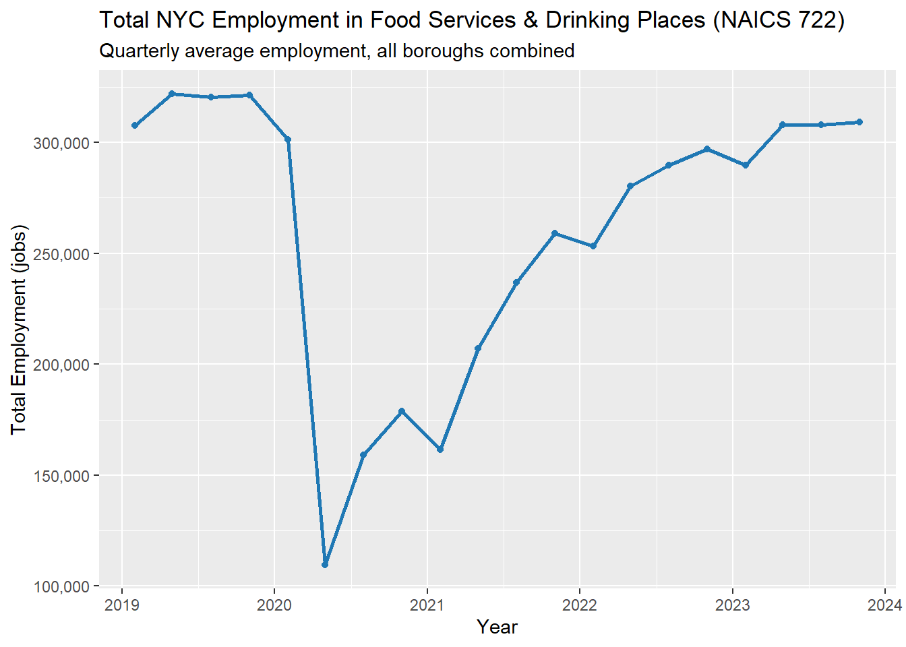
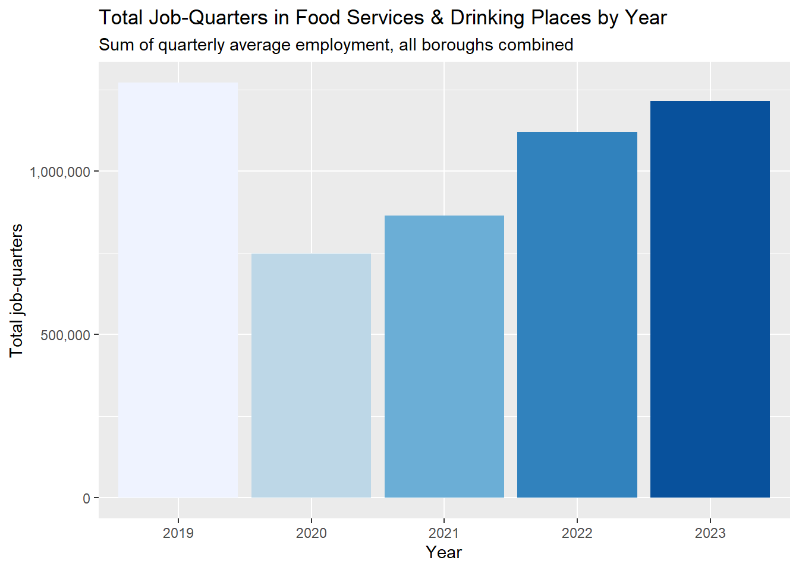
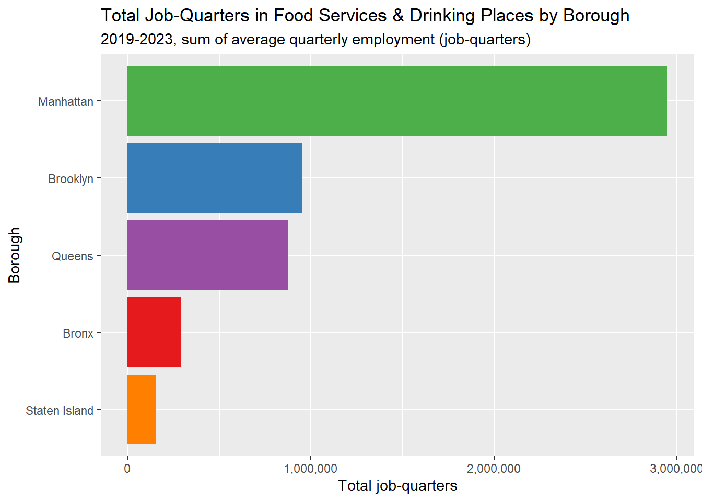
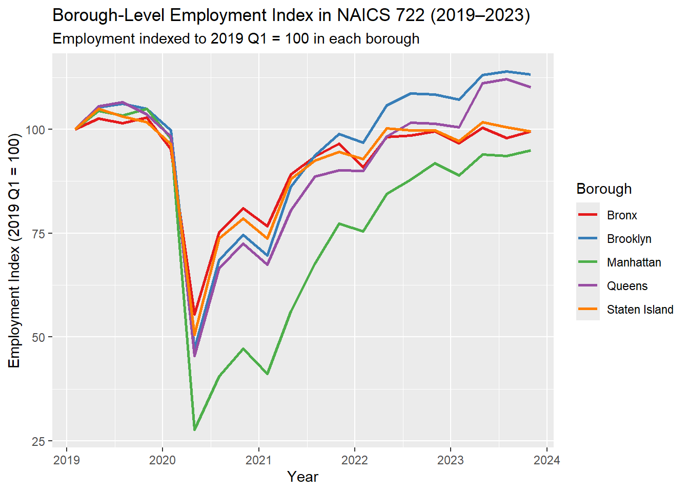
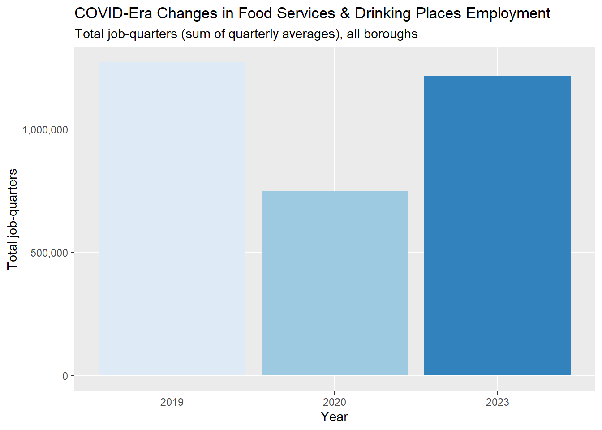

Packages
library(tidyverse)
library(httr)
library(jsonlite)
library(lubridate)
library(ggplot2)
library(gganimate)
library(gifski)
library(scales)
knitr::opts_chunk$set(message = FALSE, warning = FALSE)Employment in NYC Food Services & Drinking Places (2019-2023)
Chhin Lama
New York City’s nightlife is famous worldwide - but behind every bar, lounge, restaurant, and late-night food spot is a large workforce that makes the city’s after-dark economy possible. These workers include servers, bartenders, food-prep staff, cooks, dishwashers, supervisors, and many others who collectively keep the city running while people go out.
In this report, I examine these workers using employment data from the Bureau of Labor Statistics (BLS) Quarterly Census of Employment and Wages (QCEW) focusing on the question:
“Who’s working while the city’s partying?”
To approximate nightlife-relevant labor, I use NAICS 722 (Food Services & Drinking Places), aggregate jobs across NYC’s five boroughs, and analyze quarterly average employment from 2019-2023, spanning the pre-COVID baseline, the 2020 collapse, and the subsequent recovery.
Although QCEW does not provide hour-of-day information, it offers a reliable measure of the scale and geographic distribution of the workforce that powers NYC nightlife.
The QCEW is an establishment-based census: employers report the number of jobs at each worksite, so employment is counted based on the location of the workplace, not the county of residence of the worker. This is appropriate for my SQ, because I am interested in where nightlife-relevant jobs are located across boroughs, rather than where workers live.
| borough | area_fips |
|---|---|
| Manhattan | 36061 |
| Brooklyn | 36047 |
| Queens | 36081 |
| Bronx | 36005 |
| Staten Island | 36085 |
These county FIPS codes allow me to map raw QCEW records to the five NYC boroughs so that all subsequent summaries and figures are directly comparable.
# Base directory - saving the data
base_dir <- "C:/Client/STA9750-2025-FALL/data/Course_Project_SQ4"
# Create the folder if it doesn't exist
dir.create(base_dir, recursive = TRUE, showWarnings = FALSE)
download_qcew_area <- function(year, quarter, area_fips) {
url <- paste0(
"https://data.bls.gov/cew/data/api/",
year, "/", quarter, "/area/", area_fips, ".csv"
)
message("Requesting: ", url)
# read_csv will give a clear error if something is wrong with the URL
df <- readr::read_csv(url, show_col_types = FALSE)
df
}years <- 2019:2023
quarters <- 1:4 # Q1-Q4
all_data <- purrr::map_dfr(years, function(y) {
purrr::map_dfr(quarters, function(q) {
purrr::map_dfr(boroughs$area_fips, function(a) {
download_qcew_area(y, q, a)
})
})
})
raw_path <- file.path(base_dir, "nyc_foodservices_2019_2023_raw.csv")
readr::write_csv(all_data, raw_path)I downloaded all QCEW records for 2019-2023 and for all four quarters and five NYC counties. The raw dataset includes more than 40 columns per record, many of which are not needed for this specific question.
The QCEW files contain a wide range of variables. For this analysis, I focus on the following:
area_fips — the county FIPS code, used to assign each record to a borough
industry_code — used to filter to NAICS 722, my proxy for nightlife-relevant employment
year and qtr — calendar year and quarter, defining the time dimension
month1_emplvl, month2_emplvl, month3_emplvl — employment levels in each month of the quarter; I average these to obtain quarterly average employment
Other columns (e.g., wages and contributions) are not used here, because my specific question focuses on how many people are employed, not how much they earn.
By narrowing to this subset of columns, I keep the analysis focused on employment counts while still exploiting the time and geographic detail available in QCEW.
After downloading QCEW data for 2019-2023, I filtered the dataset to NAICS 722, representing Food Services & Drinking Places. This restricts the analysis specifically to nightlife-relevant workers across all five boroughs.
nyc_clean <- all_data %>%
# Keep only Food Services & Drinking Places
dplyr::filter(industry_code == "722") %>%
dplyr::mutate(
area_fips = as.character(area_fips),
# Quarterly average employment from the 3 monthly levels
employment = rowMeans(
cbind(
as.numeric(month1_emplvl),
as.numeric(month2_emplvl),
as.numeric(month3_emplvl)
),
na.rm = TRUE
),
qtr = as.integer(qtr),
# Representative quarterly date (middle month of quarter)
date = dplyr::case_when(
qtr == 1 ~ lubridate::make_date(as.integer(year), 2, 1), # Feb 1
qtr == 2 ~ lubridate::make_date(as.integer(year), 5, 1), # May 1
qtr == 3 ~ lubridate::make_date(as.integer(year), 8, 1), # Aug 1
qtr == 4 ~ lubridate::make_date(as.integer(year), 11, 1), # Nov 1
TRUE ~ as.Date(NA)
)
) %>%
dplyr::left_join(boroughs, by = "area_fips") %>%
dplyr::filter(!is.na(borough), !is.na(employment), !is.na(date))
clean_path <- file.path(base_dir, "nyc_foodservices_2019_2023_clean.csv")
readr::write_csv(nyc_clean, clean_path)nyc_summary_overall <- nyc_clean %>%
summarise(
min_year = min(year, na.rm = TRUE),
max_year = max(year, na.rm = TRUE),
n_quarters = dplyr::n_distinct(paste(year, qtr)),
n_boroughs = dplyr::n_distinct(borough),
min_employment = min(employment, na.rm = TRUE),
max_employment = max(employment, na.rm = TRUE)
)
knitr::kable(nyc_summary_overall, caption = "Overall Coverage of the QCEW NAICS 722 Dataset for NYC")| min_year | max_year | n_quarters | n_boroughs | min_employment | max_employment |
|---|---|---|---|---|---|
| 2019 | 2023 | 20 | 5 | 8.333333 | 195831 |
Across the full dataset, I have 20 borough-quarters of QCEW data, spanning 2019 - 2023, covering all 5 NYC boroughs.
Quarterly average employment in Food Services & Drinking Places varies widely - from as few as 8 jobs in the smallest borough-quarters to over 195,831 in the busiest ones.
This variation reflects the structural differences between Manhattan’s dense restaurant-bar clusters and the more residential composition of the outer boroughs.
nyc_year_summary <- nyc_clean %>%
group_by(year) %>%
summarise(
avg_quarterly_employment = mean(employment, na.rm = TRUE),
total_job_quarters = sum(employment, na.rm = TRUE), # sum of quarterly averages
n_quarters = n(),
.groups = "drop"
) %>%
arrange(year)
knitr::kable(
nyc_year_summary,
caption = "NYC Employment in NAICS 722 by Year (Average Quarterly Jobs and Total Job-Quarters)"
)| year | avg_quarterly_employment | total_job_quarters | n_quarters |
|---|---|---|---|
| 2019 | 52967.35 | 1271216.3 | 24 |
| 2020 | 31186.86 | 748484.7 | 24 |
| 2021 | 36011.71 | 864281.0 | 24 |
| 2022 | 46677.62 | 1120263.0 | 24 |
| 2023 | 50628.85 | 1215092.3 | 24 |
From the year-level employment results:
In 2019, NYC had an average of about 52,967 jobs per quarter in NAICS 722. Summed across quarters, this corresponds to 1,271,216 job-quarters in that year.
In 2020, average quarterly employment fell to 31,187, and total job-quarters dropped to 748,485, a decline of -41% relative to 2019.
By 2023, average quarterly employment had risen to 50,629, with 1,215,092 total job-quarters: only -4% below the 2019 level.
Interpreting these values as job-quarters (rather than distinct workers) avoids overcounting individuals who hold the same job across multiple quarters and aligns with how BLS summarizes QCEW employment volumes. This framing allows meaningful comparisons of employment intensity over time and across boroughs without implying unique headcounts.
Overall, the employment ranges confirm that nightlife labor is highly uneven across boroughs, reflecting both the density and diversity of NYC’s service economy.
To see the big picture, I first aggregate employment across all boroughs and look at the citywide time series.
nyc_trend_quarter <- nyc_clean %>%
group_by(date) %>%
summarise(
total_employment = sum(employment, na.rm = TRUE),
year = first(year),
qtr = first(qtr),
.groups = "drop"
) %>%
arrange(date)
ggplot(nyc_trend_quarter, aes(x = date, y = total_employment)) +
geom_line(linewidth = 1, color = "#1f78b4") +
geom_point(size = 1.5, color = "#1f78b4") +
scale_y_continuous(labels = scales::comma) +
scale_x_date(date_breaks = "1 year", date_labels = "%Y") +
labs(
title = "Total NYC Employment in Food Services & Drinking Places (NAICS 722)",
subtitle = "Quarterly average employment, all boroughs combined",
x = "Year",
y = "Total Employment (jobs)"
)
Before COVID, NYC’s food-service and drinking-place sector consistently employed around 300,000 jobs per quarter. In 2020 Q2, employment collapses to roughly 110,000 jobs, reflecting shutdowns of indoor dining and nightlife. After that trough, employment gradually recovers through 2021 and 2022, and by 2023 quarterly employment is again near pre-COVID levels. These are quarterly average jobs, not unique workers.
ggplot(nyc_year_summary,
aes(x = factor(year),
y = total_job_quarters,
fill = factor(year))) +
geom_col(show.legend = FALSE) +
scale_y_continuous(labels = scales::comma) +
scale_fill_brewer(palette = "Blues") +
labs(
title = "Total Job-Quarters in Food Services & Drinking Places by Year",
subtitle = "Sum of quarterly average employment, all boroughs combined",
x = "Year",
y = "Total job-quarters"
)
This summarizes the COVID-era pattern numerically: a 41% decline in job-quarters from 2019 to 2020, followed by a strong rebound that brings the sector back to within 4% of its pre-pandemic volume by 2023.
Taken together, these citywide trends show how dramatically the nightlife workforce contracted in 2020 and how steadily it rebuilt through 2023.
Next, I examine how this employment is distributed geographically across Manhattan, Brooklyn, Queens, the Bronx, and Staten Island.
nyc_borough_summary <- nyc_clean %>%
group_by(borough) %>%
summarise(
avg_quarterly_employment = mean(employment, na.rm = TRUE),
total_job_quarters = sum(employment, na.rm = TRUE),
n_quarters = n(),
.groups = "drop"
) %>%
mutate(
share_of_city_total = total_job_quarters / sum(total_job_quarters)
) %>%
arrange(desc(total_job_quarters))
knitr::kable(
nyc_borough_summary,
caption = "Employment in Food Services & Drinking Places by Borough (2019-2023)"
)| borough | avg_quarterly_employment | total_job_quarters | n_quarters | share_of_city_total |
|---|---|---|---|---|
| Manhattan | 147304.35 | 2946087.0 | 20 | 0.5644561 |
| Brooklyn | 23896.08 | 955843.0 | 40 | 0.1831349 |
| Queens | 43685.88 | 873717.7 | 20 | 0.1674001 |
| Bronx | 14485.28 | 289705.7 | 20 | 0.0555062 |
| Staten Island | 7699.20 | 153984.0 | 20 | 0.0295026 |
The borough breakdown reveals a clear concentration of nightlife-relevant labor:
Manhattan is the largest employer in NAICS 722, with an average of 147,304 jobs per quarter and about 2,946,087 job-quarters over 2019-2023. This represents 56% of the citywide total.
Brooklyn follows with 23,896 jobs per quarter and 955,843 job-quarters, or 18% of the total.
Together, these top two boroughs account for 75% of all job-quarters in Food Services & Drinking Places from 2019-2023. This concentration aligns with the well-known clustering of bars, restaurants, and nightlife corridors in Manhattan and Brooklyn, while still highlighting meaningful contributions from Queens and the Bronx and a smaller but non-zero presence in Staten Island.
ggplot(nyc_borough_summary,
aes(x = fct_reorder(borough, total_job_quarters),
y = total_job_quarters,
fill = borough)) +
geom_col(show.legend = FALSE) +
coord_flip() +
scale_y_continuous(labels = scales::comma) +
scale_fill_brewer(palette = "Set1") +
labs(
title = "Total Job-Quarters in Food Services & Drinking Places by Borough",
subtitle = "2019-2023, sum of average quarterly employment (job-quarters)",
x = "Borough",
y = "Total job-quarters"
)
This plot visually reinforces that nightlife-related employment is heavily concentrated in a small number of boroughs. Manhattan dominates, Brooklyn and Queens form a substantial second tier, and the Bronx and Staten Island have smaller but still non-trivial levels of QCEW employment in this sector. This reflects where nightlife establishments are physically concentrated, not where workers live.
To see whether the recovery path was similar across boroughs, I aggregate by borough and quarter and then normalize each series to its pre-COVID level.
nyc_borough_trend <- nyc_clean %>%
group_by(borough, date) %>%
summarise(
employment = sum(employment, na.rm = TRUE),
year = first(year),
qtr = first(qtr),
.groups = "drop"
)
# Normalize each borough to 2019 Q1 = 100
nyc_borough_index <- nyc_borough_trend %>%
group_by(borough) %>%
mutate(
base_empl = employment[year == 2019 & qtr == 1][1],
emp_index = 100 * employment / base_empl
) %>%
ungroup()
ggplot(nyc_borough_index,
aes(x = date, y = emp_index, color = borough)) +
geom_line(linewidth = 1) +
scale_color_brewer(palette = "Set1") +
scale_x_date(date_breaks = "1 year", date_labels = "%Y") +
labs(
title = "Borough-Level Employment Index in NAICS 722 (2019–2023)",
subtitle = "Employment indexed to 2019 Q1 = 100 in each borough",
x = "Year",
y = "Employment Index (2019 Q1 = 100)",
color = "Borough"
)
By indexing each borough’s employment to 100 in 2019 Q1, we can compare proportional changes on a common scale. In this figure, Manhattan drops to roughly 30-40 at the trough in 2020, while outer boroughs bottom out closer to the 45-60 range. This suggests that Manhattan not only loses the most jobs in absolute terms, but also experiences the largest percentage decline in nightlife-relevant employment. The flatter line for smaller boroughs like Staten Island largely reflects their lower starting levels, not the absence of a COVID shock.
Overall, Manhattan consistently employs the largest share of nightlife workers, with Brooklyn and Queens forming the next-largest base of labor supporting the city’s nighttime economy.
To sharpen the COVID story, I create a smaller summary that focuses on three key years: 2019 (pre-COVID), 2020 (COVID shock), and 2023 (recovery).
| year | avg_quarterly_employment | total_job_quarters | n_quarters |
|---|---|---|---|
| 2019 | 52967.35 | 1271216.3 | 24 |
| 2020 | 31186.86 | 748484.7 | 24 |
| 2023 | 50628.85 | 1215092.3 | 24 |
The COVID-19 pandemic caused a historic collapse in nightlife-relevant employment:
Total job-quarters fell by -41% from 2019 to 2020.
By 2023, total job-quarters had rebounded to -4% of the 2019 level.
This recovery underscores the resilience of NYC’s nightlife workforce, as well as the broader reliance of the city’s economy on food service and hospitality activity.
ggplot(covid_year_summary,
aes(x = factor(year),
y = total_job_quarters,
fill = factor(year))) +
geom_col(show.legend = FALSE) +
scale_y_continuous(labels = scales::comma) +
scale_fill_brewer(palette = "Blues") +
labs(
title = "COVID-Era Changes in Food Services & Drinking Places Employment",
subtitle = "Total job-quarters (sum of quarterly averages), all boroughs",
x = "Year",
y = "Total job-quarters"
)
This provides a clean visual summary of how deeply the sector was hit in 2020 and how strongly it has bounced back (or overshot) by 2023.
Overall, comparing 2019, 2020, and 2023 highlights both the severity of the COVID shock and the resilience of nighttime food-service employment across NYC.
It’s important to be clear about what this data captures and what it does not.
From the QCEW NAICS 722 dataset, we can confidently say:
The scale of employment in Food Services & Drinking Places in NYC, by borough and quarter.
How that employment changed over time, especially before, during, and after COVID.
Which boroughs host the largest shares of nightlife-relevant employment (typically the same boroughs with dense restaurant and bar clusters).
For example, over 2019-2023:
The leading borough, Manhattan, accounts for about 56% of all job-quarters in food service and drinking places in NYC.
Combined, the top two boroughs represent roughly 75% of total job-quarters in this sector.
These numbers support the narrative that Manhattan and Brooklyn play an outsized role in the city’s nightlife workforce, while Queens and the Bronx still contribute meaningfully, and Staten Island hosts a smaller, but non-zero, share.
QCEW is not a schedule-level dataset. It does not tell us:
Exactly what times of day people are working (e.g., 2 PM vs 2 AM),
How many workers are on shift at 1 AM on a Saturday in a particular neighborhood, or
The precise mix of occupations (servers vs bartenders vs cooks) within each establishment.
For this project, I treat NAICS 722 employment as a proxy for the workforce that makes nightlife possible, knowing that:
Many of these jobs involve evening and late-night hours,
But not all employment in this sector is strictly “nighttime,” and
Some nightlife-related workers may fall outside this industry code or outside formal employment.
Using QCEW employment data for NAICS 722 from 2019-2023, this report provides a borough-level portrait of the workers who keep New York City’s nightlife alive.
Key findings include:
A severe COVID shock, with total job-quarters dropping -41% between 2019 and 2020.
A strong recovery by 2023, returning to -4% of pre-COVID levels.
Geographic concentration, with Manhattan and Brooklyn accounting for 75% of all job-quarters in Food Services & Drinking Places.
Together, these results show that tens of thousands of jobs per quarter - primarily concentrated in Manhattan and Brooklyn - support the city’s vibrant nightlife economy. Although QCEW does not capture shift timing, it provides a clear, data-driven measure of the scale and distribution of the workforce that enables NYC to “party” every night. The sharp COVID decline and subsequent recovery highlight both the vulnerability and resilience of these workers, who play an essential role in the city’s cultural and economic life. These employment patterns also anchor the broader group project by revealing the workforce underlying NYC’s nightlife complaints, crime trends, and transportation flows.